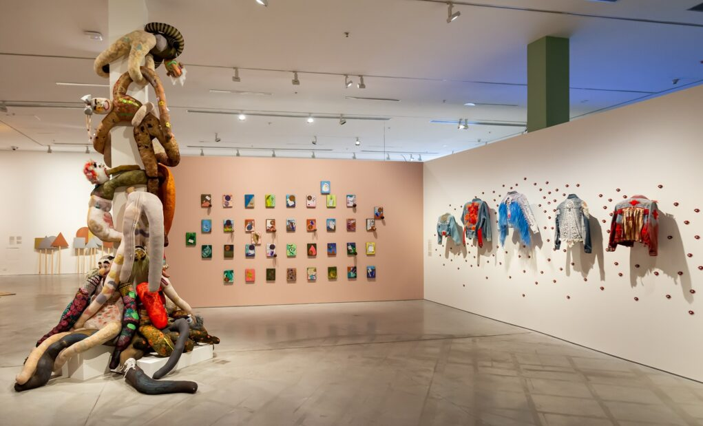

Faivovich y Goldberg
Otumpa
Historia
Desde sus inicios, el Moderno fue una institución de vanguardia y un punto de confluencia para las producciones de diversas disciplinas artísticas. El decreto fundacional establecía lo siguiente: “Créase el Museo de Arte Moderno de Buenos Aires, que dependerá de la Secretaría de Cultura y tendrá por objeto principal ilustrar, de modo objetivo y documental, sobre todas las manifestaciones del espíritu cuyo carácter permita calificarlas con aquella denominación”. Su sede sería el moderno edificio del futuro Teatro Municipal General San Martín, una obra del arquitecto Mario Roberto Álvarez, que en 1956 aún estaba en construcción y que habría de ser inaugurado recién a mediados de 1960. Por esa razón, durante sus primeros cuatro años de existencia, el museo sería nómade. La prensa lo llamó el “Museo fantasma” y, cuando interrogaban a Squirru, el director simplemente respondía: “Le Musée c’est moi” (“El Museo soy yo”).
El patrimonio del Museo de Arte Moderno de Buenos Aires, iniciado por sus primeros directores Rafael Squirru, Hugo Parpagnoli y Guillermo Whitelow, incluye más de 7000 obras de arte moderno y contemporáneo argentino e internacional de los siglos XX y XXI, con obras destacadas desde los años cincuenta, década de su fundación, a la actualidad, en línea con su misión de permanecer siempre a la vanguardia del arte. Asimismo, cuenta con importantes colecciones de diseño gráfico e industrial.
Desde el primer momento de su gestión como director del museo, Rafael Squirru se propuso constituir una colección de obras propia a partir de donaciones y adquisiciones. Para llevar adelante su proyecto, apoyó a artistas que empezaban a surgir y tenían una posición estética rupturista. Poco a poco gestionó exposiciones y adquisiciones de obras que habrían de formar parte de la colección del Moderno. En 1959 recibió las primeras donaciones de obras de artistas uruguayos y a concretar adquisiciones de obras de Alberto Greco, Kenneth Kemble, Luis Alberto Wells, Luis Felipe Noé, Miguel Ángel Vidal, Eduardo Mac Entyre, Raquel Forner y Antonio Berni, entre muchos otros
Museo de Arte Moderno
Dana Ferraresi
Galeria Grasa
En 1963, asumió la dirección del Museo Hugo Parpagnoli, que continuó con la misión de Squirru: fomentar el ingreso de obras que representaran lo moderno del arte. Entre otras gestiones, adquirió una gran cantidad de grabados de Pablo Picasso, Henri Matisse, André Derain, Hans Arp, Joan Miró, Francis Picabia, Paul Klee, Marc Chagall y Salvador Dalí. También ingresaron al Moderno obras de artistas como Alberto Heredia, Juan Carlos Castagnino, León Ferrari, Víctor Magariños, Manolo Millares, Emilio Renart, Rubén Santantonín, Ernesto Deira y Jorge de la Vega y se recibieron donaciones del Fondo Nacional de las Artes. El acervo del Museo continuó expandiéndose a lo largo de los años; durante las dos gestiones de Guillermo Whitelow (1971-1973 y 1977 – 1983) se recibieron importantes donaciones, como en 1980 y 1981, ingresó la colección del Dr. Ignacio Pirovano, donación realizada por su hermana Doña Josefina Pirovano de Mihura.
Se trata de una importante colección de 59 obras de arte moderno de artistas nacionales e internacionales, entre ellos siete George Vantongerloo, un Josef Albers, serigrafías de Piet Mondrian, Francis Picabia y otros artistas, como Tomás Maldonado. “He pensado mucho sobre tu colección y me entusiasma la idea de que ella pueda ser la base de nuestro futuro Museo de Arte Moderno” (carta de Tomás Maldonado a Ignacio Pirovano fechada el 14 de julio de 1954).En 1999 se dio inicio a la conformación de la colección Fotografía Argentina del MAMBA con el acento puesto en los lenguajes más renovadores de la fotografía y que se sumó a la colección ya existente. Este corpus, el primero de arte fotográfico de arte argentino, contiene alrededor de 300 obras. Las mismas incluyen fotografías y creaciones artísticas de soporte fotográfico que abarca más de medio siglo de producción, entre las que se encuentran obras de Anne Marie Heinrich, Anatole Saderman, Pedro Otero, Grete Stern, Jorge Roiger, Sameer Makarius, Horacio Coppola, Sara Facio, Julie Méndez Escurra, Dalila Puzzovio, Juan Travnik, Alicia Sanguinetti, Helen Zout, Marcelo Grossman, Gabriel Valansi, Leandro Katz, Alejandro Kuropatwa, Liliana Porter, Marie Orensanz, Miguel Rothchild, Ar Detroy, Graciela Hasper y David Lamelas, entre otros. En los años siguientes, gracias al aporte de artistas y coleccionistas, esta colección continuó acrecentándose.

Formas Continuas
Iommi, Ennio
En el año 2000, bajo la conducción de Laura Buccellato, el Museo recibió el legado de Alberto Heredia: un corpus de 500 obras del artista, obras de otros artistas argentinos y también su propio departamento ubicado en la Av. Caseros 828. Su biblioteca, su archivo documental y sus objetos personales fueron catalogados recientemente e incorporados al archivo histórico del Museo. Buccellato creó la colección de Diseño Industrial y Diseño Gráfico, con el asesoramiento de Ricardo Blanco (1940- 2017). A su vez realizó las gestiones necesarias para recibir la donación de un conjunto de obras presentadas en la exposición Últimas Tendencias (2002).
La colección del Museo de Arte Moderno sigue creciendo. Actualmente, bajo la gestión de Victoria Noorthoorn, se creó un programa de adquisiciones, en función de la colección del Moderno, y se han recibido importantísimas donaciones. En 2014, la Fundación Augusto y León Ferrari Arte y Acervo donó 72 obras sobre papel de León Ferrari. En 2017, el Museo recibió la generosa donación de la Colección Patricia Phepls de Cisneros (CPPC), que consiste en ocho obras, de Ernesto Ballesteros, Alejandro Corujeira, Matías Duville, Eduardo Navarro, Elisabet Sánchez y Judi Werthein.
Ubicación
-
- Horarios de atención
- Lunes, Miercoles,Jueves y Viernes de 11.00 a 19.00 hs
- Sabados, Domingos y Feriados 11.00 a 20.00 hs
- Dirección
- Av. San Juan 350, San Telmo CABA
- Contacto
- 54 11 5288 9900
-
-